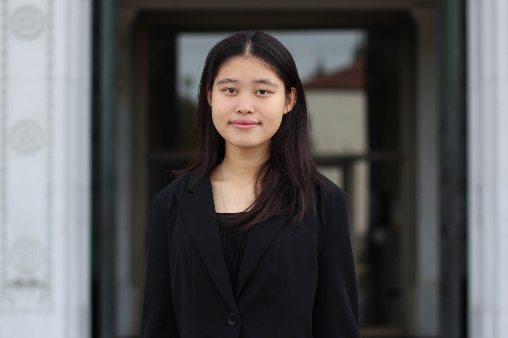

Selected Experiences
Prob 140 Group Tutor, Fall 2019 - Present
UC Berkeley Statistics Department- Incoming Prob 140 Tutor, responsible for holding office hours and helping students understand course material for Statistics 140: Probability
Software Engineering Intern, Summer 2019 - Present
InfluxData- Add strings and regex functionality to Flux query language (GoLang)
- Implement transformation functions from InfluxQL into Flux (GoLang)
- Create new stream type and allow for writing data from one stream to another in pure Flux (GoLang)
Undergraduate Researcher, Spring 2019 - Present
Goodly Labs, Public Editor Project- Create data cleaning and analysis pipeline to analyze variance associated with each credibility indicator, from which article scores are calculated
Web Co-Director, Fall 2018 - Present
Institute of Electrical and Electronic Engineers (IEEE)- Led team of 5 web officers in improving the UC Berkeley IEEE website (React, Node.js)
- Implemented new communication system, boosting productivity from 1 completed project per semester to 5 completed projects per semester
- Previously: Website Officer, Spring 2018
Data Science Skills Decal TA, Spring 2019
Data Science Society (DSS)- Answer miscellaneous questions regarding common skills in Data Science, including questions related to Python Libraries (Pandas, NumPy, Matplotlib, Seaborn), Data Visualization, Git/Github, Markdown/Latex, Logistic/Linear Regression, Classification, etc.
- Host weekly office hours for student skills development
- Create sample solutions & Grade student submissions
- Sample solution for Data Vizualization Project
Web Development Committee Member, Fall 2017 - Spring 2019
Regents' and Chancellor's Student Association (RCSA)- Redesigned and updated Committees Page (HTML, CSS)
- Supported Committee Coordinator by creating CSS Basics powerpoint and mentoring 8 new committee members
Web Development Committee Member, Fall 2017 - Fall 2018
Statistics Undergraduate Student Association (SUSA)- Implemented search function to filter office hours calendar (JavaScript embedded in HTML)
- Produced comprehensive list of major requirements and classes to facilitate redesign of Statistics Course Map

Ewen Dai UC Berkeley Class of 2021
(Expected Graduation: Fall 2020)
Regents' and Chancellor's Scholar
Data Science B.A. Statistics B.A.